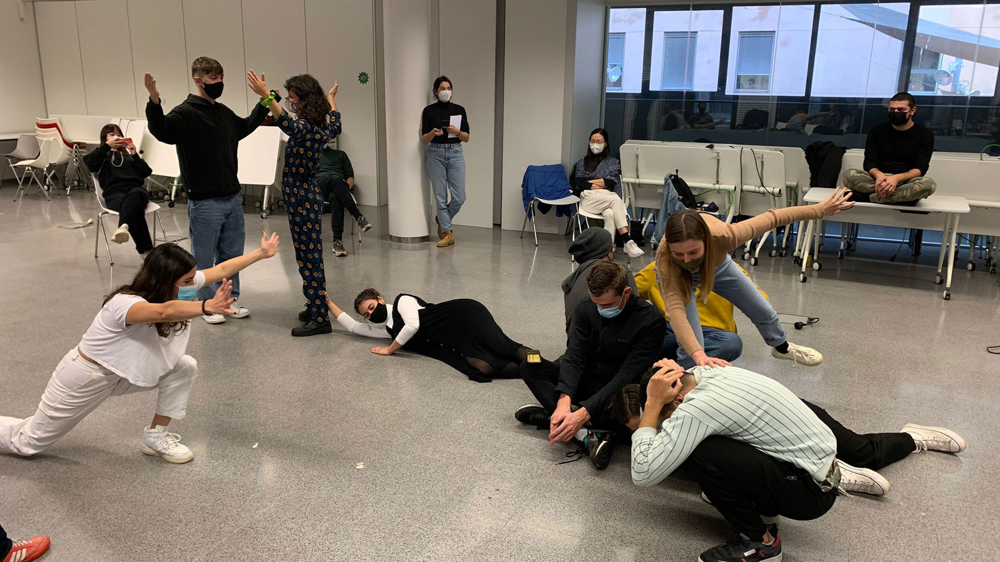

This week we were working with the members of Holon, Markel and Merce, to understand design from a wider and more realistic perspective. How to situate our research process in a context and in relation to it. How can we sustain a long term project. It’s important to learn how to position ourselves in the community and try to think how this connection would be made. This can be addressed by designing Over, For, With or Within. We went through the time-line of design evolution, understanding how design works side by side with the necessities of society.
The definition of design has been changing every generation, we were asked to define what is design for us. And I’ve always thought that design builds the bridge between Engineer and Art, funding solutions to problems without forgetting the aesthetic part. After this seminar I’ve started to think of it in a more volatile way… design is a tool used to help individuals, other species and the planet, to address their problems and concerns having in account all the possible issues of it. Hence design is continuously adapting and learning from the environment, so it is important to listen to our intuition and necessities to perform a better design. The wicked problems of the. world wont be solve by designing for them, we'll need to face and divide them in small first steps in order to design within them.
Designing with the social body
On wednesday we carried out some activities to work with our bodies as tools. We are often disconnected from our bodies and how it can help us to express and understand different concepts. I personally feel quite connected to my body and I usually express a lot with my body language and facial expressions. We were asked to position ourselves on a 3D-axis and map our bodies to different concepts and questions. I found this kind of activity very helpful in order to better acknowledge certain concepts that might be too abstract sometimes. Since I have photographic memory this methodology is a good way for me to understand and remember issues and other points of view.
Carrying out this new approach of expression, we also represented the educational system in 4D - sculptures. The task was to absorb, express and enact the characteristic, systemic and personal of a chosen body. The class was divided into two groups, one will create the figures and the other will be observers. I was part of the actors group, representing mental health in the educational system. I enjoyed this exercise and it was a useful tool to better represent our thoughts on the topic and how actually each of us would have done it in a different way, but we wouldn’t even think about it if it wasn't done physically.
